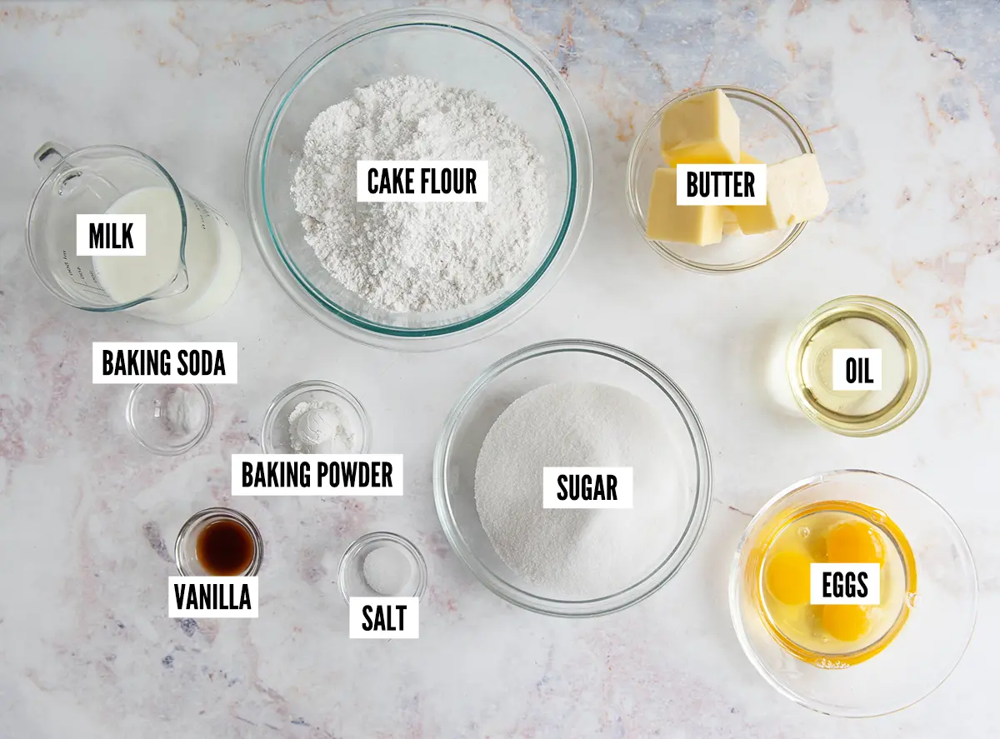
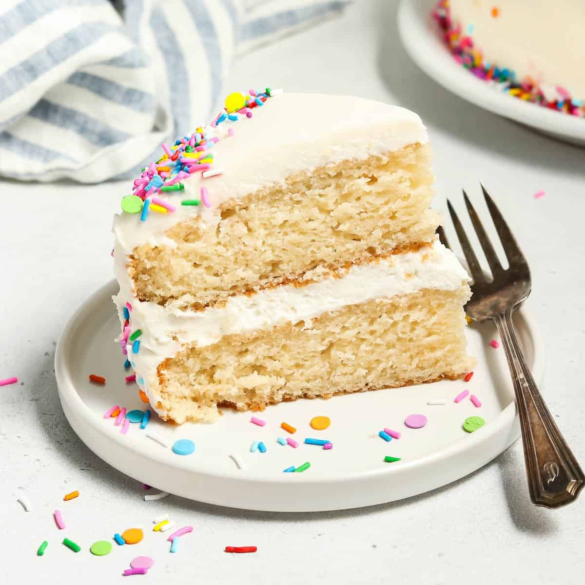

HOW TO MAKE A CAKE
Ingredients you will need are
- flour
- sugar
- eggs
- butter
- water
- salt
- a leavening agent(baking soda,etc)

Steps
- Mix flour and sugar and let it sit
- Seperate the yolk from the egg whites and mix (you can put the yolk in if you want)
- Add sugar into the eggs slowly while mixing
- Add the flour and sugar you mixed into the eggs
- place the outcome on a tube pan or bunt cake pan
- put it in a pre heated oven at 325 and leave it there for 20 minutes
- Then it's done

Go Back